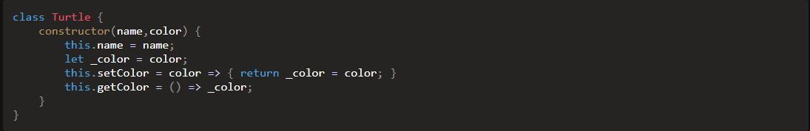

Week 4 Notes & Exercises
I decided to go along with one of the form examples. Here's the practice: A Searching Example
Chapter 8: Forms
- When accessing form elements, you need to use the legacy DOM's property called document.forms
- This returns an HTML collection of all the forms, so you need to use index notation
- ex: const form = document.forms[0];
- However, one can also use the name attribute instead
- ex: const form = document.forms.search;
- Warning: If the form had the same name as any properties or methods of the document.forms object (like 'submit'), that property or method would be referenced instead of <form>
- To avoid this, use square bracket notation
- const form = document.forms['search'];
- A form object also has a method called elements that returns an HTML collection of all the elements contained in the form
- ex: const [input,button] = form.elements;
- This returns an HTML collection of all the forms, so you need to use index notation
- Form objects have a bunch of useful properties and methods
- The form.submit() method will submit the form automatically
- Note: submitting a form using this method won't trigger the form submit event
- form.reset() will reset all the form controls back to their initial values
- Reset buttons are generally considered bad practice since they're too easy to click for something that can wipe out all the data
- form.action can be used to set the action attribute of a form so it's sent to a different URL
- The form.submit() method will submit the form automatically
- Forms trigger different events, some events being exclusive to forms
- The focus event occurs when an element is focused on
- ex: const input = form.elements.searchInput;
input.addEventListener('focus', () => alert('focused'), false);
- ex: const input = form.elements.searchInput;
- The blur event occurs when the user moves the focus away from the form element
- ex: input.addEventListener('blur', () => alert('blurred'), false);
- The change event occurs when the user moves the focus away from the form element after changing it
- If a user clicks an input field and clicks away, the change event will not fire (but the blur event will)
- The focus event occurs when an element is focused on
- Text input element objects have a value property that can be used to retrieve the text inside the field
- You can change the value inside the input using JS
- Alternatively, you can just use the placeholder attribute (I prefer this due to the fact that it does not count as a value)
- Three are different form controls that can make web pages more interactive
- Input: fields, including text, passwords, checkboxes, radio buttons, file uploads
- Select: menus for drop-down lists of options
- Textarea: elements for longer text entry
- Button: elements for submitting and resetting forms
- Some new attributes were introduced in HTML5
- For more reference, check this article
- Form validation is the process of checking whether a user has entered information into the form correctly
- Validation can occur on the client side (with JS) and on the server side
- Encouraged to do both
- JS should not be relied upon to validate any data before it's saved to a database; it's possible for a user to modify and bypass the front-end
- JS validation should be used to enhance the user's experience
- This should be backed up with more validation on the server side before the data is eventually saved to the database
- A useful technique to ensure that no errors are submitted is disabling the submit button
- If the submit button is disabled, no action is taken when it's clicked
- Most browsers will display it differently to indicate it can't be clicked
- Prevents users from submitting a form with errors
- ex: <button type='submit' id='submit' disabled>Submit</button>
- Then this can be changed (with JS) when the form is properly filled out
- function disableSubmit(event) {
if(event.target.value === '') {
document.getElementById('submit').disabled = true;
} else {
document.getElementById('submit').disabled = false;
} - You can call this in a keyup event
- function disableSubmit(event) {
Chapter 12: Object-Oriented Programming in JavaScript
OOP for short. A style of programming that involves separating code into objects that have properties and methods.
- OOP often used to model representations of objects in the real world
- Three main concepts
- Encapsulation
- Polymorphism
- Inheritance
- Encapsulation: the inner workings are hidden inside the object and only the essential functionalities are exposed to the end user
- Keeps all programming logic inside an object and makes methods available to implement functionality without the outside world needing to know how it's done
- Polymorphism: different objects can use the same process
- Various objects can share the same method but also have the ability to override the shared methods for more specific implementation
- Inheritance: take the features of one object and adding some new features
- Take an object that exists and inherit properties and methods
- New object's functionalities can be improved by adding new properties and methods
- Three main concepts
- You can create an object with the object literal notation or with a constructor function
- A function that defines the properties and methods of an object
- const Dice = function(sides=6) {
this.sides = sides;
this.roll = function() {
return Math.floor(this.sides * Math.random() + 1);
}
} - Then you can create an instance of the object using "new"
- const Dice = function(sides=6) {
- Parentheses are not required when instantiating a new object using a constructor function
- Parentheses are required if you want to create an object with a specific argument
- A function that defines the properties and methods of an object
- JS comes with some built-in constructor functions (for instance, array, object, function)
- Arrays are a bit different in how arguments work
- If multiple arguments, they will be placed in the array
- If only one argument, it will set the length of the array with undefined in the index
- Arrays are a bit different in how arguments work
- Constructor functions were the only way of using class-like behavior in JS before ES6
- Class declaration syntax in JS does the same thing as the constructor function but looks similar to class declarations in a class-based language
- class Dice {
constructor(sides=6) {
this.sides = sides;
}
roll() {
return Math.floor(this.sides * Math.random() + 1);
}
} - Naming convention: names of constructor functions or class declarations are capitalized
- Class declaration is more preferable
- Create static methods using the static keyword
- A static method is called by the class directly rather than by the instances of that class
- Instances of the class cannot call the method
-
static description() {
return 'A way of choosing random numbers'
}
- Prototypes are useful for creating properties and methods that will stay the same throughout every instance
- You can override the declaration as instances' own property/method declarations will be of higher importance
- Discouraged to use arrays or objects as a default value in a prototype
- Any extra methods and properties that need to be augmented to the class declaration after it's been defined can be added to the prototype
- All properties and methods of an instance are automatically public
- This means they can be changed to any value with assignment, and this should be avoided
- The concept of variable scope can keep properties and methods private inside a class declaration
- 
- Because _color is in this scope, it can't be accessed outside it without the getColor() and setColor() methods
- There is a prototype chain that goes up from the object all the way to the Object() constructor function
- When a method is called, it checks if the object has that method, then goes up to check if the object's prototype has the method, and it goes up through the prototype chain
- The prototype of the Object constructor has a large number of methods that are inherited by all objects